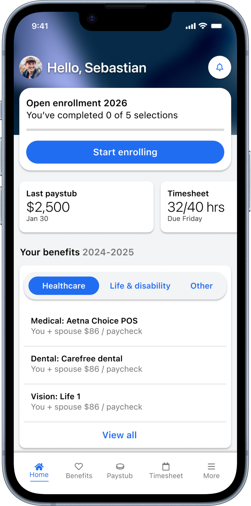
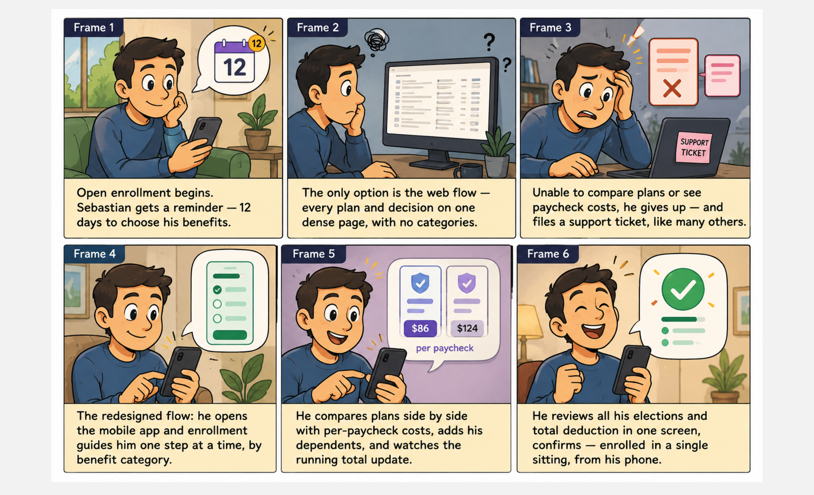
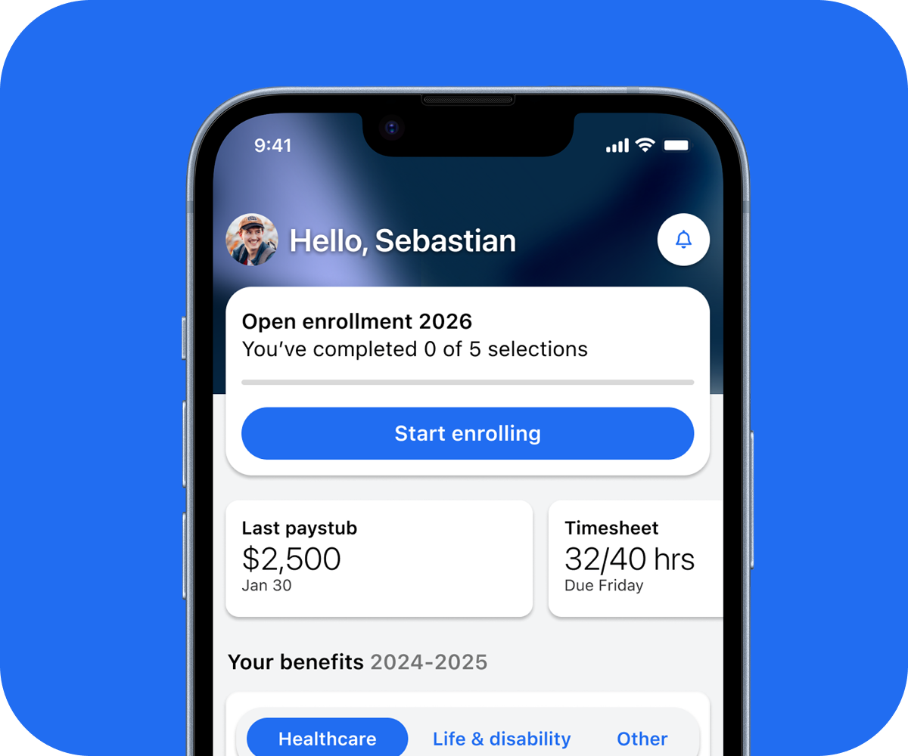
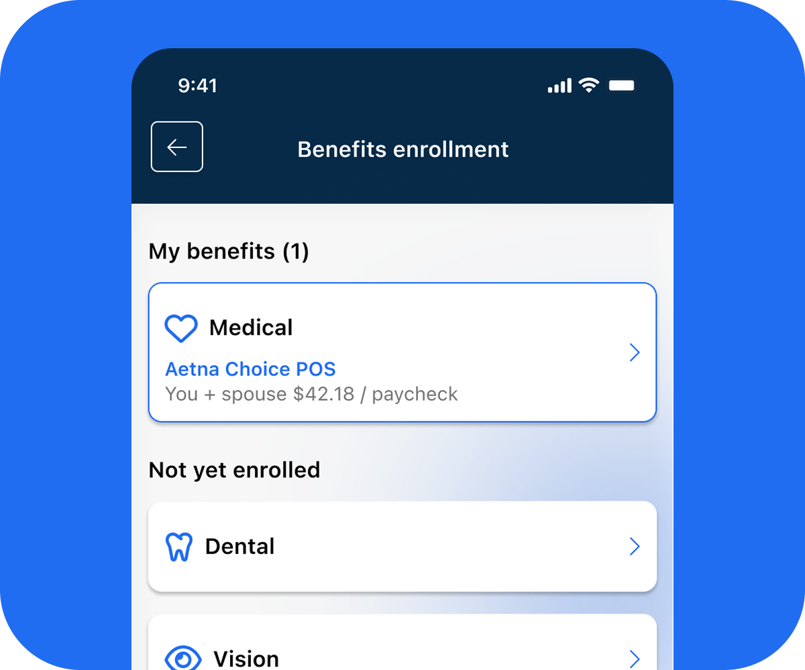
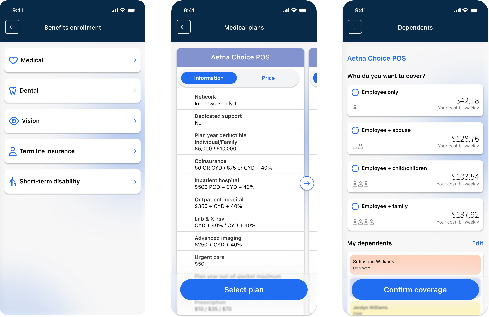
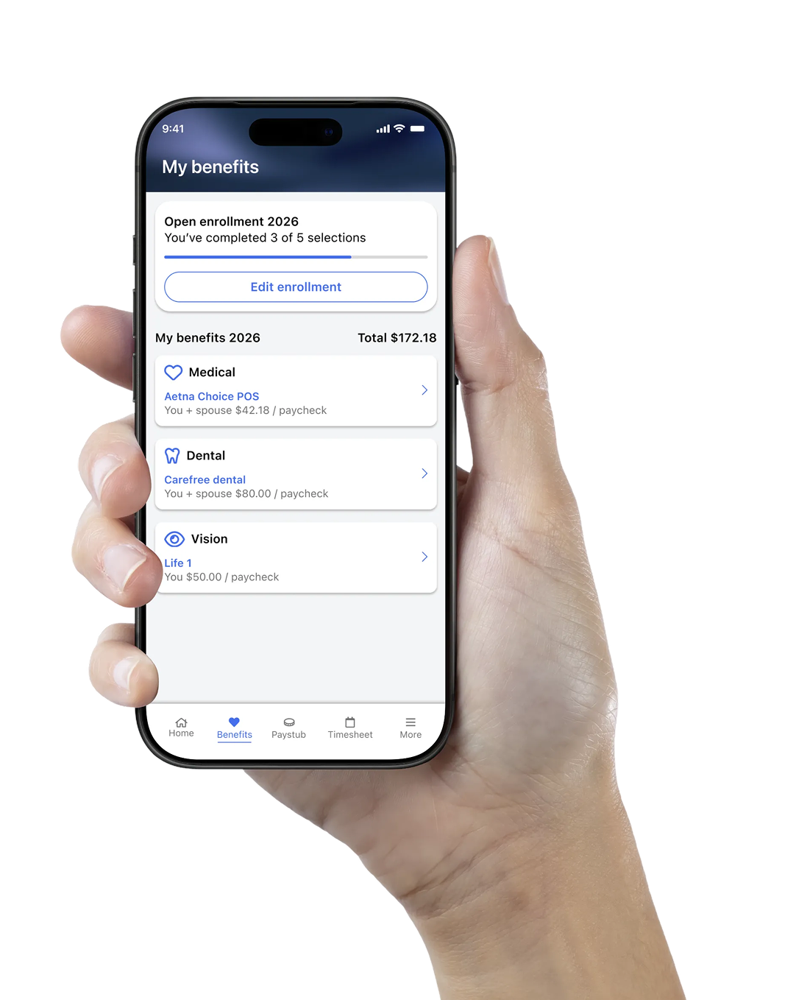

Benefits Enrollment
The first fully mobile healthcare benefits enrollment experience for a payroll & HR platform, turning a dense, desktop-only process into clear, guided steps employees can complete from their phones.

The Challenge
Employees could previously only enroll in their healthcare benefits through a web flow that many found complex and difficult to complete. I redesigned the end-to-end journey for mobile, breaking a dense, overwhelming process into clear, guided steps.
A dense, desktop-only process
Employees needed to enroll in their healthcare benefits, but the only option was a web experience that users repeatedly described as complex and hard to follow, largely because it presented everything at once instead of guiding them step by step. On top of that, there was no way to enroll from the mobile app, so employees who lived on their phones were locked out of a critical, time-sensitive task.
One clear step at a time
I designed a mobile-native benefits enrollment experience that guides employees through the process one clear step at a time. Rather than presenting every decision at once, the flow breaks enrollment into focused stages: choosing a plan, adding dependents, and reviewing before confirming.
Discovery
Before designing anything, I needed to understand why employees were struggling with enrollment. I surveyed employees about their experience: what was hardest, what information was missing, why they delayed or abandoned the process, and where they would prefer to enroll.
48% Understanding benefit types
27% Comparing plans
17% Estimating costs
8% Other
52% Total cost per paycheck
24% Differences between plans
16% Coverage details
8% Enrollment deadlines
41% Too many options at once
31% Couldn't compare plans
19% Unclear costs
9% No time to finish
57% Mobile app
28% Desktop web
15% With help from HR
Key insights
Employees weren't struggling to make choices. They were struggling to understand them.
Users couldn't see how much would come out of their paycheck, so they were making financial decisions essentially blind.
Without a way to compare plans side by side, people defaulted to hesitation.
Ideation
Storyboard
To align the team around the problem, I storyboarded the journey of Sebastian, an employee going from a frustrating, desktop-only experience that ends in a support ticket, to a guided mobile flow he completes in a single sitting.

User flow
The flow breaks enrollment into focused decisions: select a benefit type, compare plans, choose coverage, add dependents, and then loop back for the next benefit or confirm everything in one review screen.
Design Solution
Helping users enroll in their healthcare benefits with confidence. Every screen answers the two questions employees kept asking: "what does this cost me per paycheck?" and "what's left to do?"
Enrollment starts on the home screen
During open enrollment, the home screen reprioritizes itself. Instead of burying a time-sensitive task behind navigation, a dedicated card surfaces progress (0 of 5 selections) and the deadline, with a single tap to continue. When enrollment ends, the card steps aside and everyday tasks take back the spotlight.


A guided enrollment process
Employees move through one benefit category at a time. Plan details and prices sit side by side, and every coverage tier shows its exact bi-weekly cost, so choosing between "Employee only" and "Employee + family" is a financial decision made with full visibility, not a guess.

Know what's done and what's next
In the old experience, employees had no visibility into what they'd already chosen versus what was still pending, a major source of support tickets. The redesigned hub makes status legible at a glance: enrolled benefits show their plan and per-paycheck cost, while remaining categories stay one tap away.
Impact
Each design decision traced back to a research finding, and each one had a measurable outcome.
Before the redesign, roughly 40% of enrollments were either left incomplete or required calling support to make changes. After the mobile launch, that figure dropped to approximately 12%.
Based on product analytics and support data